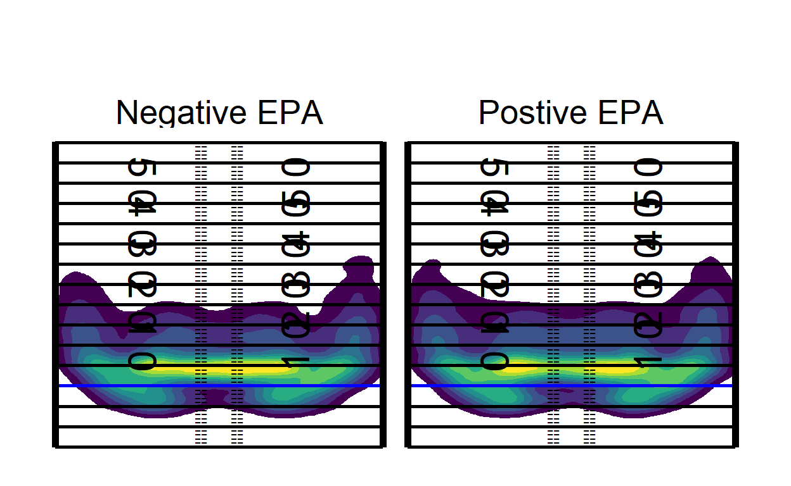
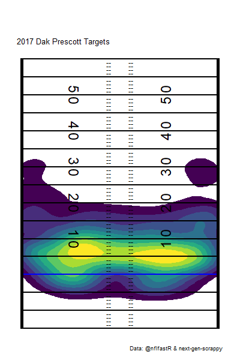

Thomas Mock from Rstudio has done it again and shown us how to pull in different heatmap options into R. You can see his blogpost here!
Earlier I had posted a Gist talking about animated plots, but decided why not add the two together and make some faceted and animated heatmaps to really let us dig down into whatever subsets we want. Maybe we want to see some season splits or changes year over year?
First, let’s pull in our data.
library(tidyverse)
library(arrow)
souce_url <- "https://raw.githubusercontent.com/ArrowheadAnalytics/next-gen-scrapy-2.0/master/pass_and_game_data.csv"
pass_map_df <-
data.table::fread(souce_url) %>%
na.omit() %>%
select(-V1)
pbp <-
open_dataset("D:/nflfastR/", format = "feather") %>%
filter(season >= 2017, play_type == "pass") %>%
collect()Since this dataset is pretty small I won’t convert the NGS scrappy data (shouts to OG scrappy legend Sarah Mallepalle) to feather, but you can learn how here.
Next, let’s figure out a good way to merge our data, we’ll need to do some aggrigation of the pbp to get something useful here. Luckly, we’ve already trimmed it down to a small size.
epa_yac <-
pbp %>%
group_by(old_game_id, passer_player_name, posteam) %>%
summarise(
mean_epa = mean(epa, na.rm = TRUE),
mean_YAC = mean(yards_after_catch, na.rm = TRUE)
)Let’s say we didn’t want to just look at one player, but we wanted to look at the passing patters of every QB since 2017 who meets some threshold, then we could learn something about the underlying nature of EPA, or YAC.
Now, if you’ll excuse me here I’m going to lift a little bit of code from Thomas’ blog post I linked above since he already gave us the structure to plot on the field as a function. We all stand on the shoulder of giants.
#### Code blog from Thomas Mock
back_col <- "white"
front_col <- "black"
not_div_5 <- function(x) {
# select only elements of the vector not divisible by 5
x[x %% 5 != 0]
}
center_df <- tibble(
x_coord = c(rep(-3.1, 60), rep(3.1, 60)),
y_coord = seq(-14, 59, 1) %>% rep(2) %>% not_div_5(),
text = "--"
)
# line labels
annotate_df <- tibble(
x_coord = c(12.88, -12.88) %>% rep(each = 5),
y_coord = seq(10, 50, 10) %>% rep(2),
text = seq(10, 50, 10) %>% rep(2) %>% str_replace("(.)(.)", "\\1 \\2"),
rotation = c(90, 270) %>% rep(each = 5)
)
# yardlines
yardline_df <- tibble(
y = seq(-15, 60, 5),
yend = seq(-15, 60, 5),
x = rep(-56 / 2, 16),
xend = rep(56 / 2, 16)
)
# sidelines
sideline_df <- tibble(
y = c(-15.15, -15.15),
yend = c(60.15, 60.15),
x = c(-56 / 2, 56 / 2),
xend = c(-56 / 2, 56 / 2)
)
add_field <- function() {
list(
coord_cartesian(
xlim = c(-53.333 / 2, 53.333 / 2),
ylim = c(-15, 60)
),
geom_text(
data = annotate_df, aes(label = text, angle = rotation),
color = front_col, size = 8
),
geom_segment(
data = yardline_df, color = front_col, size = 1,
aes(x = x, y = y, xend = xend, yend = yend)
),
geom_segment(
x = -56 / 2, y = 0, xend = 56 / 2, yend = 0,
color = "blue", size = 1, alpha = 0.5
),
geom_segment(
data = sideline_df, color = front_col, size = 2,
aes(x = x, y = y, xend = xend, yend = yend)
),
geom_text(
data = center_df,
aes(label = text), color = front_col, vjust = 0.32
),
theme_void(),
theme(
strip.text = element_text(size = 20, color = front_col),
plot.background = element_rect(fill = back_col, color = NA),
legend.position = "none",
plot.margin = unit(c(2, 1, 0.5, 1), unit = "cm"),
plot.caption = element_text(color = front_col),
plot.title = element_text(color = front_col),
plot.subtitle = element_text(color = front_col),
panel.background = element_rect(fill = back_col, color = NA),
panel.border = element_blank()
)
)
}Next we need to do a little rangling here to get our player names to match. We don’t have id numbers here, but since we are only dealing with QBs we should be able to join on name and team, unless someone knows of two QBs on the same team with the same names!
pass_map_df %>%
separate(name, into = c("first", "last"), "\\s") %>%
mutate(
passer_player_name = paste0(str_extract(first, "\\w"), ".", last)
) %>%
inner_join(epa_yac, by = c("passer_player_name", "team" = "posteam", "game_id" = "old_game_id"))
game_id first last pass_type team week x_coord y_coord
1: 2017091004 Carson Palmer COMPLETE ARI 1 -23.5 14.6
2: 2017091004 Carson Palmer COMPLETE ARI 1 2.8 9.3
3: 2017091004 Carson Palmer COMPLETE ARI 1 18.6 -1.1
4: 2017091004 Carson Palmer COMPLETE ARI 1 -8.4 8.3
5: 2017091004 Carson Palmer COMPLETE ARI 1 -15.5 8.0
---
37817: 2019122904 Casey Keenum INCOMPLETE WAS 17 14.6 2.0
37818: 2019122904 Casey Keenum INCOMPLETE WAS 17 24.5 14.8
37819: 2019122904 Casey Keenum INCOMPLETE WAS 17 11.7 -7.6
37820: 2019122904 Casey Keenum INCOMPLETE WAS 17 10.9 14.1
37821: 2019122904 Casey Keenum INCOMPLETE WAS 17 -9.8 12.3
type home_team away_team season
1: reg DET ARI 2017
2: reg DET ARI 2017
3: reg DET ARI 2017
4: reg DET ARI 2017
5: reg DET ARI 2017
---
37817: reg DAL WAS 2019
37818: reg DAL WAS 2019
37819: reg DAL WAS 2019
37820: reg DAL WAS 2019
37821: reg DAL WAS 2019
game_url
1: http://www.nfl.com/liveupdate/game-center/2017091004/2017091004_gtd.json
2: http://www.nfl.com/liveupdate/game-center/2017091004/2017091004_gtd.json
3: http://www.nfl.com/liveupdate/game-center/2017091004/2017091004_gtd.json
4: http://www.nfl.com/liveupdate/game-center/2017091004/2017091004_gtd.json
5: http://www.nfl.com/liveupdate/game-center/2017091004/2017091004_gtd.json
---
37817: http://www.nfl.com/liveupdate/game-center/2019122904/2019122904_gtd.json
37818: http://www.nfl.com/liveupdate/game-center/2019122904/2019122904_gtd.json
37819: http://www.nfl.com/liveupdate/game-center/2019122904/2019122904_gtd.json
37820: http://www.nfl.com/liveupdate/game-center/2019122904/2019122904_gtd.json
37821: http://www.nfl.com/liveupdate/game-center/2019122904/2019122904_gtd.json
home_score away_score passer_player_name mean_epa mean_YAC
1: 35 23 C.Palmer -0.2199358 4.407407
2: 35 23 C.Palmer -0.2199358 4.407407
3: 35 23 C.Palmer -0.2199358 4.407407
4: 35 23 C.Palmer -0.2199358 4.407407
5: 35 23 C.Palmer -0.2199358 4.407407
---
37817: 47 16 C.Keenum -0.6127941 5.833333
37818: 47 16 C.Keenum -0.6127941 5.833333
37819: 47 16 C.Keenum -0.6127941 5.833333
37820: 47 16 C.Keenum -0.6127941 5.833333
37821: 47 16 C.Keenum -0.6127941 5.833333Looks like we dropped a few entries, probably a team name mismatch, so let’s fix that.
fastR_teams <- epa_yac$posteam %>% unique()
scrappy_teams <- pass_map_df$team %>% unique()
setdiff(fastR_teams, scrappy_teams)
[1] "LV"As suspected, the scrappy team names reflect OAK while nflfastR lists LV.
pass_map_df %>%
separate(name, into = c("first", "last"), "\\s") %>%
mutate(
passer_player_name = paste0(str_extract(first, "\\w"), ".", last),
team = ifelse(team == "OAK", "LV", team)
) %>%
inner_join(epa_yac, by = c("passer_player_name", "team" = "posteam", "game_id" = "old_game_id"))
game_id first last pass_type team week x_coord y_coord
1: 2017091004 Carson Palmer COMPLETE ARI 1 -23.5 14.6
2: 2017091004 Carson Palmer COMPLETE ARI 1 2.8 9.3
3: 2017091004 Carson Palmer COMPLETE ARI 1 18.6 -1.1
4: 2017091004 Carson Palmer COMPLETE ARI 1 -8.4 8.3
5: 2017091004 Carson Palmer COMPLETE ARI 1 -15.5 8.0
---
39280: 2019122904 Casey Keenum INCOMPLETE WAS 17 14.6 2.0
39281: 2019122904 Casey Keenum INCOMPLETE WAS 17 24.5 14.8
39282: 2019122904 Casey Keenum INCOMPLETE WAS 17 11.7 -7.6
39283: 2019122904 Casey Keenum INCOMPLETE WAS 17 10.9 14.1
39284: 2019122904 Casey Keenum INCOMPLETE WAS 17 -9.8 12.3
type home_team away_team season
1: reg DET ARI 2017
2: reg DET ARI 2017
3: reg DET ARI 2017
4: reg DET ARI 2017
5: reg DET ARI 2017
---
39280: reg DAL WAS 2019
39281: reg DAL WAS 2019
39282: reg DAL WAS 2019
39283: reg DAL WAS 2019
39284: reg DAL WAS 2019
game_url
1: http://www.nfl.com/liveupdate/game-center/2017091004/2017091004_gtd.json
2: http://www.nfl.com/liveupdate/game-center/2017091004/2017091004_gtd.json
3: http://www.nfl.com/liveupdate/game-center/2017091004/2017091004_gtd.json
4: http://www.nfl.com/liveupdate/game-center/2017091004/2017091004_gtd.json
5: http://www.nfl.com/liveupdate/game-center/2017091004/2017091004_gtd.json
---
39280: http://www.nfl.com/liveupdate/game-center/2019122904/2019122904_gtd.json
39281: http://www.nfl.com/liveupdate/game-center/2019122904/2019122904_gtd.json
39282: http://www.nfl.com/liveupdate/game-center/2019122904/2019122904_gtd.json
39283: http://www.nfl.com/liveupdate/game-center/2019122904/2019122904_gtd.json
39284: http://www.nfl.com/liveupdate/game-center/2019122904/2019122904_gtd.json
home_score away_score passer_player_name mean_epa mean_YAC
1: 35 23 C.Palmer -0.2199358 4.407407
2: 35 23 C.Palmer -0.2199358 4.407407
3: 35 23 C.Palmer -0.2199358 4.407407
4: 35 23 C.Palmer -0.2199358 4.407407
5: 35 23 C.Palmer -0.2199358 4.407407
---
39280: 47 16 C.Keenum -0.6127941 5.833333
39281: 47 16 C.Keenum -0.6127941 5.833333
39282: 47 16 C.Keenum -0.6127941 5.833333
39283: 47 16 C.Keenum -0.6127941 5.833333
39284: 47 16 C.Keenum -0.6127941 5.833333Okay we’re closer, but still missing some rows. Probably a QB name mismatch. Let’s find them.
pass_map_df <-
pass_map_df %>%
separate(name, into = c("first", "last"), "\\s") %>%
mutate(
passer_player_name = paste0(str_extract(first, "\\w"), ".", last),
team = ifelse(team == "OAK", "LV", team)
)
fastR_qbs <- epa_yac$passer_player_name %>% unique()
scrappy_qbs <- pass_map_df$passer_player_name %>% unique()
setdiff(fastR_qbs, scrappy_qbs)
[1] "M.Stafford" "B.Bortles" "D.Prescott" "R.Quigley"
[5] "J.Landry" "J.Hekker" "C.Henne" "R.Mallett"
[9] "M.Haack" "M.Cassel" "L.Edwards" "M.Gray"
[13] "T.McEvoy" "P.O'Donnell" "T.Cohen" "C.Beathard"
[17] "M.Lee" "R.Golden" "C.Rush" "G.Smith"
[21] "S.Koch" "E.Decker" "S.Vereen" "T.Kelce"
[25] "K.Clemens" "J.Ryan" "C.Kupp" "J.Rudock"
[29] "J.Webb" "B.Nortman" "M.Palardy" "A.McCarron"
[33] "L.Fitzgerald" "L.Jones" "G.Tate" "J.Callahan"
[37] "R.Cobb" "T.Bray" "W.Snead" "T.Burton"
[41] "N.Agholor" "D.Henry" "K.Byard" "A.Wilson"
[45] "J.Scott" "C.Bojorquez" "D.Hopkins" "E.Sanders"
[49] "N.Mullens" "J.Dobbs" "B.Anger" "C.Beasley"
[53] "D.Hilliard" "L.Cooke" "L.Thomas" "D.Jennings"
[57] "T.Boyd" "E.Ebron" "C.McCoy" "C.Wadman"
[61] "A.Miller" "C.Daniel" "A.Brown" "C.Boswell"
[65] "R.Griffin III" "B.Ellington" "M.Sanchez" "Z.Jones"
[69] "J.Johnson" "K.Lauletta" "S.Martin" "C.McCaffrey"
[73] "D.Westbrook" "M.Darr" "K.Stills" "M.Prater"
[77] "G.Gilbert" "T.Way" "D.Pettis" "J.Stidham"
[81] "P.Williams" "J.Samuels" "A.Kamara" "J.Elliott"
[85] "G.Minshew II" "Z.Pascal" "B.Kern" "M.Wishnowsky"
[89] "Jos.Allen" "R.Dixon" "A.Lee" "D.Colquitt"
[93] "K.Barner" "C.Sutton" "B.Powell" "S.Sims"
[97] "T.Boyle" "J.Brown" "A.Erickson" "J.White"
[101] "J.Gordon" "A.Tanney" "A.Beck" "K.Hunt"
[105] "K.Harmon" "S.Diggs" "S.Watkins" It appears as though a lot of names are non-QBs such as Sam Koch or Dustin Colquitt. Punters doing trick plays etc. But some of these are QBs we need to fix like RG3, Dak Prescott, and Matt Stafford.
epa_yac <-
epa_yac %>%
mutate(
passer_player_name = ifelse(passer_player_name == "Jos.Allen", "J.Allen", passer_player_name),
passer_player_name = ifelse(passer_player_name == "G.Minshew II", "G.Minshew", passer_player_name),
passer_player_name = ifelse(passer_player_name == "R.Griffin III", "R.Griffin", passer_player_name)
)
pass_map_df <-
pass_map_df %>%
mutate(
passer_player_name = ifelse(passer_player_name == "R.Prescott", "D.Prescott", passer_player_name),
passer_player_name = ifelse(passer_player_name == "J.Stafford", "M.Stafford", passer_player_name),
passer_player_name = ifelse(passer_player_name == "R.Bortles", "B.Bortles", passer_player_name)
)You get the point, you can use this code and repair more names to match but I am going to proclaim victory and move on.
pass_map_df <-
pass_map_df %>%
inner_join(epa_yac, by = c("passer_player_name", "team" = "posteam", "game_id" = "old_game_id"))For our first split, let’s leverage these two datasets and see if we can see some structural differences between EPA and YAC performance.
pass_map_df %>%
mutate(
epa_below_zero = ifelse(mean_epa <= 0, "Negative EPA", "Postive EPA"),
epa_below_zero = as.factor(epa_below_zero)
) %>%
ggplot(aes(x = x_coord, y = y_coord)) +
geom_density_2d_filled(
aes(fill = ..level.., color = ..level..),
contour_var = "ndensity", # normalize across facets
breaks = seq(0.1, 1.0, length.out = 10)
) +
facet_wrap(~epa_below_zero) +
add_field()
Let’s try the same thing but for YAC!
pass_map_df %>%
mutate(
yac_below_zero = ifelse(mean_YAC <= 0, "Negative YAC", "Postive YAC"),
yac_below_zero = as.factor(yac_below_zero)
) %>%
ggplot(aes(x = x_coord, y = y_coord)) +
geom_density_2d_filled(
aes(fill = ..level.., color = ..level..),
contour_var = "ndensity", # normalize across facets
breaks = seq(0.1, 1.0, length.out = 10)
) +
facet_wrap(~yac_below_zero) +
add_field()
The finding structure and drawing any conclusions is left as an exersize for the reader.
But let’s now take a look at QB performance over time.
pass_map_df %>%
filter(passer_player_name == "D.Prescott") %>%
ggplot(aes(x = x_coord, y = y_coord)) +
geom_density_2d_filled(
aes(fill = ..level.., color = ..level..),
contour_var = "ndensity", # normalize across facets
breaks = seq(0.1, 1.0, length.out = 10)
) +
facet_wrap(~season) +
add_field() +
labs(title = "Dak Prescott Targets by year, 2017-2019")
It apears that as the years have gone on, DAK as less likely to throw to his left. Interesting, maybe something is there. Maybe the departure of personnel, or it could simply be new play designs. But what if we wanted to take this and make an animation instead of looking at these plots side by side.
library(gganimate)
p <-
pass_map_df %>%
filter(passer_player_name == "D.Prescott") %>%
ggplot(aes(x = x_coord, y = y_coord)) +
geom_density_2d_filled(
aes(fill = ..level.., color = ..level..),
contour_var = "ndensity", # normalize across facets
breaks = seq(0.1, 1.0, length.out = 10)
) +
transition_states(season, transition_length = 2, state_length = 1) +
labs(
x = "X Coordinate",
y = "Y coordinate relative to LOS",
caption = "Data: @nflfastR & next-gen-scrappy",
title = "{closest_state} Dak Prescott Targets"
) +
enter_fade()+
exit_fade() +
add_field()Now we’re ready to create our heatmap that changes over time. Imagine all the exploring we could do with this!
animate(p, width = 400, height = 600)
We could look at Patrick Mahomes over time, or Russell Wilson week to week. If we could get play_ids somehow we could improve our EPA plots above and look at negative EPA vs positive by down, distance. Perhaps if we assumed the order of the scrappy plays is in game order, we could match it to the nflfastR set and see what we find. Try it out and see!
One last thing, let’s combine what we’ve done and add in some of the work of Josh Hermsmeyer to do direct QB comparisons.
qb_density_compare <- function(pass_df, qb1_name, qb2_name, n = 100){
# filter to qb1
qb1 <- pass_df %>%
select(x_coord, y_coord, name) %>%
filter(str_detect(name, qb1_name))
#filter to qb2
qb2 <- pass_df %>%
select(x_coord, y_coord, name) %>%
filter(str_detect(name, qb2_name))
# get x/y coords as vectors
qb1_x <- pull(qb1, x_coord)
qb1_y <- pull(qb1, y_coord)
# get x/y coords as vectors
qb2_x <- pull(qb2, x_coord)
qb2_y <- pull(qb2, y_coord)
# get x and y range to compute comparisons across
x_rng = range(c(qb1_x, qb2_x))
y_rng = range(c(qb1_y, qb2_y))
# Calculate the 2d density estimate over the common range
d2_qb1 = MASS::kde2d(qb1_x, qb1_y, lims=c(x_rng, y_rng), n=n)
d2_qb2 = MASS::kde2d(qb2_x, qb2_y, lims=c(x_rng, y_rng), n=n)
# create diff df
qb_diff <- d2_qb1
# matrix subtraction density from qb2 from qb1
qb_diff$z <- d2_qb1$z - d2_qb2$z
# add matrix col names
colnames(qb_diff$z) = qb_diff$y
#### return tidy tibble ####
qb_diff$z %>%
# each col_name is actually the y_coord from the matrix
as_tibble() %>%
# add back the x_coord
mutate(x_coord= qb_diff$x) %>%
pivot_longer(-x_coord, names_to = "y_coord", values_to = "z") %>%
mutate(y_coord = as.double(y_coord))
}
pass_map_df <- pass_map_df %>% rename(name = passer_player_name)
compared_z <- data.frame()
for (i in seq(2017, 2019, 1)) {
compared_z <- rbind(qb_density_compare(pass_map_df[pass_map_df$season == i], "P.Mahomes", "A.Rodgers", n = 200) %>% mutate(season = i), compared_z)
}
library(scales)
p <-
compared_z %>%
# mutate(season = as.factor(season)) %>%
ggplot(aes(x_coord, y_coord)) +
# geom_tile(aes(x_coord, y_coord, fill=z)) +
stat_contour(geom = "polygon",
aes(colour=..level.., z = z, fill = ..level..),
breaks = seq(min(compared_z$z), max(compared_z$z), length.out = 10)
) +
scale_fill_gradient2(low="blue",mid="white", high="red", midpoint=0) +
scale_colour_gradient2(low=muted("blue"), mid="white", high=muted("red"), midpoint=0) +
add_field() +
theme(legend.position = "bottom", legend.key.width = unit(2, "cm"),
plot.title = element_text(size = 20, hjust = 0.5, face = "bold"),
plot.subtitle = element_text(size = 12, hjust = 0.5),
plot.caption = element_text(face = "bold")) +
labs(title = "{current_frame}, Mahomes (QB1) vs Rodgers (QB2)",
subtitle = "Red = More by QB1, Blue = More by QB2",
caption = "\n\nPlot: @thomas_mock | Data: @ChiefsAnalytics") +
guides(colour=FALSE) +
transition_manual(factor(season, levels = c('2017', '2018', '2019'))) +
enter_fade()+
exit_fade()
animate(p, width = 400, height = 600)